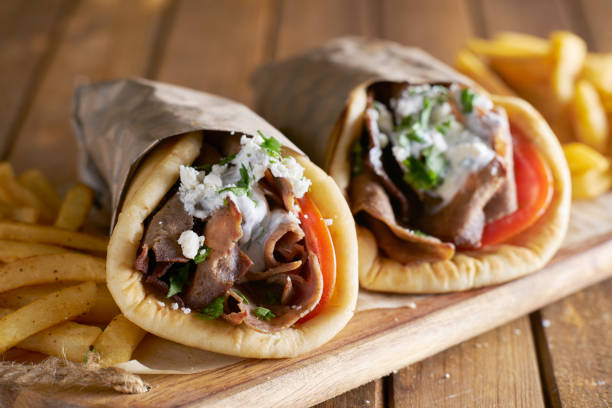

Traditional Gyros

Description
Gyros is one of the most popular Greek street food dishes, consisting of meat such as pork and chicken
(in Greece) or lamb and veal (popular in other countries) cooked on a vertical spit. The meat is sliced in
thin shavings and is then usually placed in a pita bread along with sauces such as tzatziki and
vegetables such as tomatoes, onions, lettuce, and cucumbers.
Ingredients
For Gyros
- 1 pork tenderloin, cut into strips
- 1 clove garlic, chopped
- 1/2 red onion, sliced
- 3-4 tbsp of olive oil
- 1-2 tbsp red wine vinegar
- Spices: 1 tbsp oregano, thyme, rosemary
- 1/2 tbsp honey
For Tzatziki Sauce
- 1 cucumber
- 2 cloves garlic
- 60 ml (1/4 cup) extra virgin olive oil
- 500g (1.1 lbs) yogurt
- 1-2 tbsp red wine vinegar
- salt and freshly ground pepper
To Serve
- 4 pita breads
- 1 red onion, sliced
- 1 tomato, sliced
- fried potatoes (optional)
- lettuce